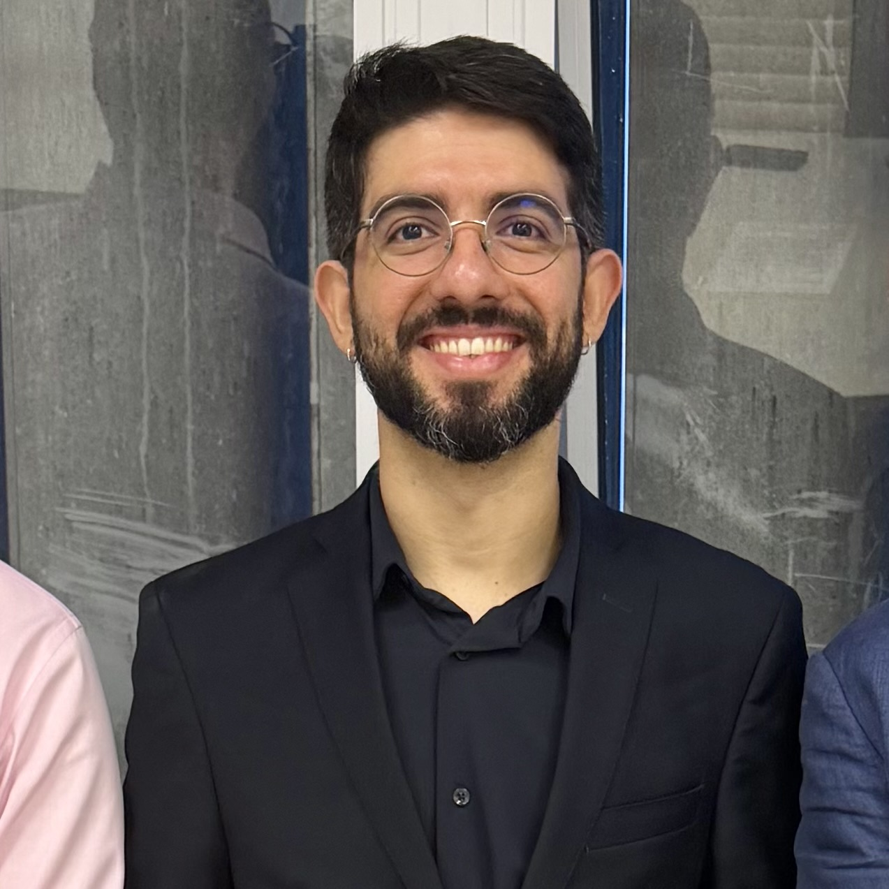

Instituto Federal de Educação, Ciência e Tecnologia do Amazonas – IFAM • 2021 - Atual
Docente Efetivo • Dedicação Exclusiva • Disciplina: Filosofia

Luiz Felipe Xavier Gonçalves
Doutorado em Filosofia pela Universidade Federal de São Paulo, 2026
Meus principais interesses de pesquisa situam-se na filosofia política, na filosofia do direito e nos estudos nietzschianos, com foco na genealogia do Estado e do direito segundo Nietzsche e na recepção inicial de seu pensamento no Brasil. Entre 2024 e 2025, durante o doutorado, realizei estágios de pesquisa na Université du Québec à Montréal e na Universität Basel, financiados pelas bolsas de excelência do Governo do Canadá (ELAP/PFLA) e do Governo Suíço (ESKAS). Sou membro do Grupo de Estudos Nietzsche (GEN) e do Centro de Estudos Nietzsche: Recepção no Brasil (CENBRA). Atualmente, atuo como professor efetivo do Instituto Federal do Amazonas (IFAM) em regime de dedicação exclusiva.
Universidade Federal de São Paulo • 04.2021 - 04.2026
Orientação: Prof. Dr. Ivo da Silva Junior
Universität Basel (UniBasel), Suíça • 09.2024 - 08.2025
Supervisão: Prof. Dr. Markus Wild
Financiamento: ESKAS – Bolsa de Excelência do Governo Suíça
Université du Québec à Montréal (UQÀM), Canadá • 01.2024 – 07.2024
Supervisão: Profª. Drª. Chiara Pizzesi
Financiamento: PFLA/ELAP – Bolsa de Excelência do Governo Canadense
Universidade Federal de Pernambuco • 2017 - 2019
Universidade Federal de Pernambuco – Faculdade de Direito do Recife • 2016 - 2022
Centro Universitário Claretiano – Batatais • 2016 - 2017
Universidade Católica de Pernambuco • 2013 - 2015
Docente Efetivo • Dedicação Exclusiva • Disciplina: Filosofia
Docente • Disciplinas: Filosofia do Direito e Introdução ao Direito
Professor do Ensino Médio • Disciplinas: Filosofia e Sociologia
Como docente no IFAM - Campus XXXXXX, busco integrar a reflexão filosófica à prática e à realidade local. Abaixo, disponibilizo as ementas (syllabi) e cronogramas de leitura das minhas disciplinas recentes.
Minha pesquisa investiga a recepção da filosofia de Friedrich Nietzsche no pensamento jurídico brasileiro entre o final do século XIX e a década de 1930. Trabalho com a hipótese de que as ideias nietzschianas foram assimiladas no Brasil, nesse período, primordialmente por meio de uma perspectiva evolucionista, servindo para preencher distintos 'carecimentos conceituais' (no sentido de Agnes Heller) dos autores analisados.
Ao mapear essa recepção inicial, analiso como o evolucionismo — difundido especialmente pela Escola do Recife, com a influência indireta de Tobias Barreto — atuou como ponte para a entrada de Nietzsche no país. O estudo aprofunda-se nas obras de figuras como Farias Brito, Pontes de Miranda e Almáquio Diniz, evidenciando como cada jurista se apropriou dessa leitura de maneira singular: seja como contraponto para defender o espiritualismo, como base sutil para a teoria da adaptação social no Direito, ou como fundamento biológico para a ideia de (Übermensch).
Apoiando-me no conceito de 'recepções menores' de Laure Verbaere, minha contribuição central é reorganizar o mapa da recepção de Nietzsche no Brasil, demonstrando que as leituras realizadas 'à margem' do Direito oficial foram vetores cruciais para a disseminação e a cristalização das imagens do filósofo na cultura nacional.
Abaixo estão listados apenas os trabalhos centrais. Para a lista completa, consulte o Currículo Lattes.
Tese de Doutorado • 2026
Defendida no Programa de Pós-Graduação em Filosofia da Universidade Federal de São Paulo.
Acessar Tese [PDF]Artigo em Periódico • 2026
Publicado em: Cadernos Nietzsche, v. 47, n. 1, p. 01-33.
Ler nos Cadernos NietzschePhD in Philosophy with a focus on the reception of Friedrich Nietzsche's work among Brazilian legal scholars (1876-1937).
I have been a visiting researcher at UQÀM (Canada) and Universität Basel (Switzerland). Currently teaching at the Federal Institute of Amazonas (IFAM).
Docteur en Philosophie spécialisé dans la réception de l'œuvre de Friedrich Nietzsche par les juristes brésiliens.
Chercheur invité à l'UQÀM (Canada) et à l'Universität Basel (Suisse). Actuellement professeur à l'Institut Fédéral de l'Amazonas (IFAM).